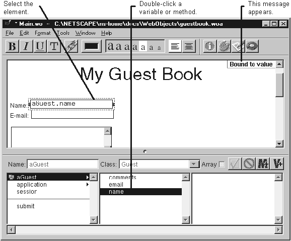

Table of Contents
Table of Contents
 Previous Section
Previous Section
Table of Contents
Previous Section
Select an element.
Double-click a variable in the object browser.
A message appears in the upper right corner of the component window's editing display. The message tells you what attribute the variable is bound to.

Bindings are the key to writing dynamic HTML pages in WebObjects. A binding is a mapping between a variable or method declared in a component's script and a dynamic element in the component's HTML.
Each dynamic element defines one or more attributes. You can bind each attribute to a different variable or method in your script. Thus, there is not a one-to-one correlation between dynamic elements and variables. To bind an element, you must specify three things: the variable (or method), the element, and the attribute within the element.
Many times, WebObjects Builder can determine which attribute you want to bind to without you having to explicitly specify the attribute. For example, if you select a WORepetition and double-click an array, WebObjects Builder binds the array to the list attribute. If you select a WORepetiton and double-click a variable that isn't an array, WebObjects Builder binds the variable to the item attribute (which represents a single item in the WORepetition's list).
For each dynamic element, WebObjects Builder chooses the attribute that is most commonly used, given the class of the double-clicked variable. Thus, double-clicking a variable should produce the binding you want most of the time.
You can override WebObjects Builder's default bindings by binding using the inspector instead of double-clicking. You might need to do this when:
Most dynamic element attributes can be bound to constants as well as variables. If you want to bind to a constant, you must use the inspector interface.
This happens when the dynamic element doesn't have one attribute that's more commonly used than its other attributes. If WebObjects Builder can't determine a default attribute, it displays the message "No suitable default binding" and you can complete the binding using the inspector.
For example, WOString's only default attribute is value, which specifies what the string should display. WebObjects Builder automatically binds to this attribute only if you double-click a simple variable (that is, an Object, Number, or String, all of which can easily translate into a string). If you double-click an array, WebObjects Builder displays the message "No suitable default binding." If you truly intend to bind the WOString to the array, you can do so using the inspector.
For example, suppose you want to bind to the WOString's escapeHTML attribute (which determines if any HTML tags in the string should be interpreted by the browser or displayed as specified). If you select the WOString and double-click a variable, WebObjects Builder chooses the value attribute.
For example, if you have a WORepetition that surrounds a table row, the WORepetition doesn't appear in the component window.
To learn more about a dynamic element's attributes, look it up in the "Dynamic Elements" section of the WebObjects Reference. Also, you can select the attribute in the bindings inspector to see a short description of the attribute.
 Next Section
Next Section